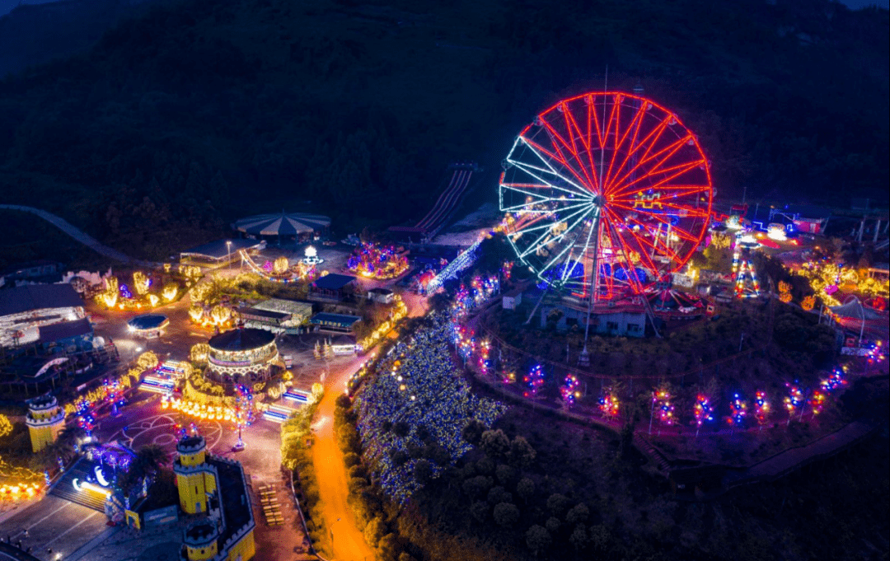

风景名胜
达州，地处四川东部，辖4县2区1市，幅员面积1.66万平方千米，总人口658.94万，是人口大市、资源富市、工业重镇、交通枢纽和革命老区，享有“巴人故里、红色达州、中国气都”之美誉。其中拥有包括八台山、龙潭河、賨人谷、巴山大峡谷、罗家坝巴人文化遗址、宕渠古城等自然山水和人文文化一大批丰富的旅游资源。
| 简介 | 图片 | |
|---|---|---|
| 凤凰山 |
凤凰山，位于四川省达州市，即达州凤凰山公园，位于达州市城北，因其山势犹如一只展翅的凤凰得名，属山林风景型城市公园，是达州市城区面积最大的城市公园，也是达城人“元九登高节”的主要场所。主要有凤凰楼、凤凰亭、红军亭、送君亭、元稹纪念馆、西圣寺等景点场所。 |
|
| 巴山大峡谷 |
巴山大峡谷（百里峡），位于宣汉县境内，是国家AAAA级旅游风景区。景区由百里峡、江口湖两部分组成，总面积为105平方千米，其中百里峡景区范围65平方千米，海拔452米至2148米，峡长140千米。巴山大峡谷景区历史悠久，有秦末汉初樊哙屯兵驻扎留下的将军坪、跑马梁、拴马石、大通险道及石栈道等遗址，有张献忠、白莲教留下的青龙寨、大寨子等遗址。 |
|
| 八台山 |
八台山风景名胜区地处万源市八台乡的东部，因地貌成层状梯级递降，有八层之多，故名八台山。主峰2348m，为川东第二高峰。八台山为大巴山石灰岩山地的一部分。区内景物多彩多样，融山景、峰景、崖景、生景、气景为一体，是达州市自然风景最吸引人的景区之一。八台山峰谷高差达1500一1700m。 |
 |
| 賨人谷 |
賨人谷风景区地处达州市渠县城东26千米，以奇山、秀水、幽洞、丽峡、飞瀑、湖泊、涌泉、怪石、古栈、茂林著称，被誉为川东“小九寨”、国家AAAA级旅游区、省级风景名胜区、省级森林公园。景区内景观众多，汇洞景、石景、崖景、瀑景、气景、生景和人文景观为一体，并且有些景物独具特色。 |
|
| 真佛山 |
真佛山位于达州市达川区城南30余千米的七里峡山脉中段的福善乡境内，是国家AAAA级风景区。风景区主要由德化寺、玉佛寺、金刚寺、凌云寨等人文景观，以及胭脂湖、三仙石、海螺洞、莲花庵、云华山、刀脊梁等自然景观构成。 与德化寺遥遥相对的一佛寺双塔，造型别致，工艺精湛，塔高21层，可谓全国之最。古庙、石塔、林海、秀峰、溶洞、湖水浑然一体。 |
 |
| 观音山森林公园 |
观音山森林公园位于四川盆地东北大巴山南麓，达州市宣汉县柏树镇，面积24488亩，最高海拔1058.6米。以低山丘陵地貌为主，为中亚热带湿润季风气候区。观音山森林公园不仅是生态旅游胜地，还具有历史价值和丰富的文化底蕴，观音山的神话传说，神龙宫的传奇故事，山顶的宝盖寺遗址，红军战场遗址和“白莲教”起义遗址见证着历史的痕迹。 |
 |
| 森林公园 |
雷音铺森林公园总面积800公顷，距达川区南城6千米处，雷音铺森林公园金刚寺旅游度假村，距达城20千米，位于达川区金刚，该度假村置身于参天古树之中，清乾隆三年建造的名胜古刹，规模宏伟壮观。雷音铺森林公园经过几年的建设，初具规模，已向游客开放并能为游客提供会议、度假、餐饮、娱乐为一体的优质服务。 |
|
| 云顶野生动物园 |
金石云顶大型野生动物园位于四川省达州市通川区金石镇高兴村，总占地2000余亩，其中，动物园约1500亩。 |
|
| 一佛寺塔 |
一佛寺塔又名双石塔，位于达川区城东南40千米的景市乡一佛塔村，一佛寺建于清宣统元年，其建筑形式和殿堂布局与真佛山寺庙十分相仿，可惜该寺庙毁于“文革”，现仅存山门和石梯，山门高5米，两边门柱上石刻楹联，为“梵刹甚清幽孤月寒烟空色相，园多雅致万家烟火映禅登”。 |
|
| 莲花湖 |
莲花湖地处郊外山林之中，由众多岛屿组成，每每阳春三月，盛开的桃花就成为了市民游览的热点，其中的桃花岛更是缤纷艳丽。水库积雨面积5.4平方千米，库容量1033万立方米，水域面积93.33公顷（1400多亩），建有湿地公园等休闲场所。 |
 |
| 列宁主义街 |
列宁主义街位于距达州市达川区63千米的石桥镇西南角，由东向西一字排开的四座仿木结构的石牌坊，分别是清嘉庆、同治、光绪年间为旌表、诰封、节孝而建造的。石牌坊古朴隽秀，重檐斗拱蔚为壮观。 |
|
| 渠县文庙 |
渠县文庙地处四川达州市渠县县城内，市级重点文物保护单位。现存的文庙是前后经历康熙、雍正、乾隆、嘉庆四个皇帝，改迁位置，费时118年之久才建成的。文庙大门雄伟壮观，朱红照壁，十分耀眼。正北面“宫墙万仞”四个遁劲有力的楷书鎏金大字，相传为康熙皇帝手书。 |
|
| 神剑园 |
神剑园（英译：Excalibur Park）位于四川省达州市通川区罗江镇高石村的张爱萍将军故居，是为纪念神剑将军张爱萍所建。景区主要由张爱萍故居、红军文化陈列馆两部分组成。2018年12月，入选四川省级首批廉洁文化基地，评为国家3A级旅游景区。 |
|
| 大寨子公园 |
大寨子公园位于四川省达州市西外新区，内有亭台楼榭，长廊曲桥，名木古树，是一座精致的城市森林公园，是达州市25个重大工程项目之一，是达州市建设“绿色达州”的重要举措，充分体现了人与自然和谐相处的理念。 |
|
| 月湖狂欢谷 |
达州月湖狂欢谷距达州城区约13公里。景区规划面积约9.5平方公里，主要景点有游客中心、帝森庄园、草莓主题公园、秦巴农耕文化博览馆、月湖景区等，是集山水自然观光、都市农业体验、民俗文化体验、科普教育、户外运动、花卉观光等众多业态为一体的综合性4A旅游目的地。 |
 |
| 云门天寨 |
青宁云门天寨农旅综合项目位于四川省达州市通川区青宁镇，在建项目包括万亩油用牡丹种植基地、云门天寨、天盆草原、石文化主题公园、水中峡谷、高山原乡康养度假等，以及配套建设旅游主道环线45公里、景区游步道、停车场、供水设施等。 |